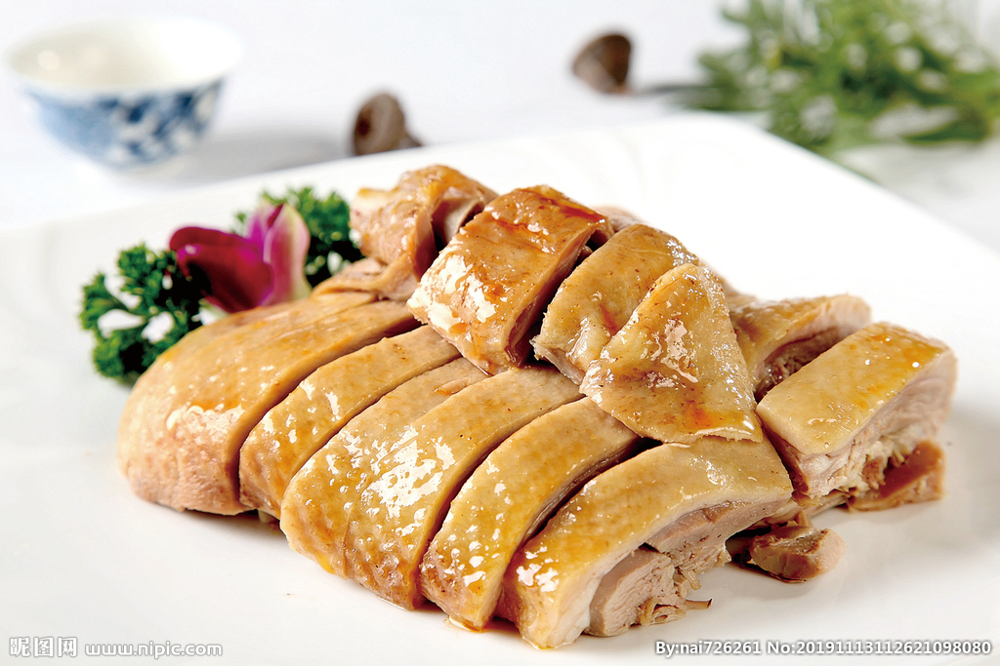

中国八大菜系
中国的八大菜系分别是鲁菜、川菜、粤菜、苏菜、浙菜、闽菜、湘菜和徽菜。它们代表了中国丰富多彩的饮食文化，每个菜系都有独特的风味和做法。
菜系是在选料、切配、烹饪等技艺方面，经长期演变而自成体系，具有鲜明的地方风味特色，并为社会所公认的中国饮食的菜肴流派。
中国饮食文化的菜系，是指在一定区域内，由于气候、地形、历史、物产及饮食风俗的不同，经过漫长历史演变而形成的一整套自成体系的烹饪技艺和风味，并被全国各地所承认的地方菜肴。
早在商周时期中国的膳食文化已有雏形，以太公望最为代表 ，再到春秋战国的齐桓公时期，饮食文化中南北菜肴风味就表现出差异。到唐宋时，南食、北食各自形成体系。到了南宋时期，南甜北咸的格局形成。在清朝初年，川菜、鲁菜、淮扬菜、粤菜，成为当时最有影响的地方菜，被称作四大菜系。到了清朝末年，浙江菜、闽菜、湘菜、徽菜四大新地方菜系分化形成，共同构成汉民族饮食的“八大菜系”。
鲁菜（山东菜）
鲁菜是中国最古老的菜系之一，起源于山东省，因其菜肴丰富、口味多样而闻名。鲁菜强调味道的鲜美与精细的刀工，最具代表性的特点是清淡、鲜香和注重火候。
特点：
鲁菜注重原汁原味，注重高汤的使用，尤其以海鲜、家禽、和肉类的处理技巧为著名。它的做法既讲究色香味，又注重食材的新鲜和搭配。
代表菜品：
- 扒鸡
- 糖醋鲤鱼
- 葱烧海参
德州扒鸡又称德州五香脱骨扒鸡，是著名的德州三宝（扒鸡、西瓜、金丝枣）之一。德州扒鸡是中国山东传统名吃，鲁菜经典。德州扒鸡制作技艺为国家非物质文化遗产。 [1]早在清朝乾隆年间，德州扒鸡就被列为山东贡品送入宫中供帝后及皇族们享用。五十年代，国家副主席宋庆龄从上海返京途中，曾多次在德州停车选购德州扒鸡送给毛泽东主席以示敬意。德州扒鸡因而闻名全国，远销海外，被誉为“天下第一鸡”。
德州扒鸡介绍糖醋鲤鱼是以鲤鱼为主料制作的药膳。
"糖醋鲤鱼”是山东济南的传统名菜。济南北临黄河，黄河鲤鱼不仅肥嫩鲜美，而且金鳞赤尾，形态可爱，是宴会上的佳肴。《济南府志》上早有“黄河之鲤，南阳之蟹，且入食谱”的记载。
葱烧海参是山东省胶东地区（指烟台、青岛等地）的一道特色名菜，属于鲁菜系，是鲁菜代表菜之一。
该菜品发源自烟台福山菜，以水发海参和大葱为主料，其海参清鲜，柔软香滑，葱段香浓，食后无余汁。是“古今八珍”之一，葱香味醇，营养丰富，滋肺补肾。
川菜（四川菜）
川菜是以其鲜明的麻、辣、酸、甜为特点的菜系，源自四川省。川菜在调料上以辣椒、花椒、豆瓣酱为主，口味浓烈且层次分明。
特点：
川菜注重调味料的搭配，尤其善于运用麻辣和酸甜的相互平衡。常常会使用花椒带来的麻感，配合辣椒的辣味，味道丰富。
代表菜品：
- 宫保鸡丁
- 麻婆豆腐
- 冒烤鸭
- 水煮鱼
宫保鸡丁（Kung Pao Chicken），是一道闻名中外的特色传统名菜，在鲁菜、川菜、贵州菜中都有收录，其原料、做法有差别。该菜式的起源于鲁菜中的酱爆鸡丁、贵州菜中的胡辣子鸡丁有关，后被清朝山东巡抚、四川总督丁宝桢改良发扬，形成了一道新菜式——宫保鸡丁，并流传，此道菜也被归纳为北京宫廷菜 。之后宫保鸡丁也流传到国外。
宫保鸡丁选用鸡肉为主料，佐以花生米、辣椒等辅料烹制而成；红而不辣、辣而不猛、香辣味浓、肉质滑脆；其入口鲜辣，鸡肉的鲜嫩可以配合花生的香脆。
2018年9月，被评为“中国菜”之贵州十大经典名菜、四川十大经典名菜。
麻婆豆腐（sauteed doufu in hot and spicy sauce），是四川地区传统名菜之一，始于清朝，此菜成菜麻、辣、鲜、香、烫、整、嫩、酥，突出川菜麻辣味型的特点。
麻婆豆腐介绍冒烤鸭即冒鸭子是四川省成都市的特色美食，属川菜系、以千寻冒烤鸭最为有名，它结合了烤鸭的皮脆肉嫩和四川特有的冒菜的吃法，将烤鸭切块后放到冒菜的汤锅里烫一下，加上冒菜就是一钵热气腾腾，荤素搭配，鲜香四溢的四川特色的 冒烤鸭。
冒烤鸭介绍水煮鱼又称江水煮江鱼、水煮鱼片，是中国川渝地区的一道特色名菜，属于川菜系，其最早流行于重庆市渝北区翠云乡。
水煮鱼通常由新鲜草鱼、豆芽、辣椒等食材制作而成。“油而不腻、辣而不燥、麻而不苦、肉质滑嫩”是其特色。
粤菜（广东菜）
粤菜源自广东省，是中国四大菜系之一。它以其清淡、鲜美、讲究原汁原味而著称。粤菜的烹饪手法注重原料的新鲜，烹饪方式有蒸、煮、炖、炒等。
特点：
粤菜偏重清淡鲜美，注重食材的搭配和食物的口感，尤其擅长蒸和煮。菜品口感细腻，常常让人一尝即知是粤菜。
代表菜品：
- 广式早茶
- 白切鸡
- 烧鹅
- 蚝烙
在广州的茶楼里，时常会看到一家老小坐在一起饮早茶。桌子上除了一壶茶外，还有许多件点心，大家最常吃的少不了广式点心的“四大天王”：叉烧包、虾饺、蛋挞和干蒸烧卖。因此，广东人饮早茶，不仅仅是喝茶，已经演变成以吃茶点为主，茶点讲究精、美、新、巧。饮早茶已成为广东人生活中必不可少的一部分。在茶楼里，大家一边品尝美味，一边和家人朋友说东家长西家短。茶客们的声音此起彼伏，人与人之间的关系也逐渐拉近。在广东，“请早茶”成为一种普遍的社交方式。“饮咗茶未啊！”成为广东人见面时最常说的一句话。
广式早茶介绍白斩鸡又叫白切鸡、三黄油鸡，是一道中华民族特色菜肴，起源于广东，是一道经典的粤菜，在南方菜系中普遍存在，如广府菜、上海菜、客家菜（广东、福建、江西、广西）中都有，始于清代的民间酒店，因烹鸡时不加调味白煮而成，食用时随吃随斩，故称“白斩鸡”。
白切鸡介绍烧鹅是广东省一道著名的广府菜 ，属粤菜系，烧鹅源于烤鸭 。
鹅以乌鬃鹅为优，去翼、脚、内脏的整鹅，吹气，涂五香料，缝肚，滚水烫皮，过冷水，糖水匀皮，晾风而后腌制，最后挂在烤炉里或明火上转动烤成，斩件上碟，便可进食。
广东地区著名的烧鹅如广州市黄埔区的“深井烧鹅”，江门市新会区古井镇的“古井烧鹅” ，深圳光明区的“公明烧鹅”，东莞大岭山的“荔枝柴烧鹅”，中山“三墩烧鹅”、佛山的“羊额烧鹅”等。
蚝烙是广东省潮汕地区的一道特色小吃（潮汕话为o⁵⁻⁷ luah⁴ ），该菜品在台湾地区称为蚵仔煎，外地人来潮汕总要品尝这一美食。在潮汕城市乡村小市集，常有这种小店或摆摊小贩。这种蚝烙，是用地瓜粉溶于水，拌葱珠，在一个平底的铁锅上煎，加上海蛎，再下蛋花，取起蘸鱼露吃。
蚝烙介绍苏菜（江苏菜）
苏菜又叫江苏菜，代表了中国的精致与细腻。它讲究色香味俱全，食材选择严格，尤其擅长调味与火候的掌握。
特点：
苏菜擅长糖醋口味，且菜肴注重艺术性和表现力，口味清淡，偏甜。常常使用刀工精湛的食材和复杂的烹饪技艺。
代表菜品：
- 老鸭汤
- 镇江肴肉
-
镇江肴肉又名水晶肴肉、水晶肴蹄，是江苏镇江地区传统名菜。
镇江肴肉介绍
传说，古时镇江酒海街酒店的小二，误把硝当盐腌猪蹄膀，烧煮后，肉红皮白，光滑晶莹，卤冻透明，犹如水晶，香味浓郁，食味醇厚。后来，人们嫌“硝肉”一名不雅，改为“水晶肴肉”，成为镇江的传统名产。
- 狮子头
- 南京盐水鸭
老鸭汤是一道安徽沿江的特色传统名菜，制作原料主要有活老鸭、精盐等。
汤汁澄清香醇，滋味鲜美，鸭脂黄亮，肉酥烂鲜醇，是一种集美食养生，传统滋补，民间食疗为一体的大众消费型汤锅食品。
狮子头，原名葵花斩肉、葵花肉丸，是中国淮扬菜系中的一道传统菜肴。始于隋朝，传说是在隋炀帝游幸时，厨师以扬州万松山、金钱墩、象牙林、葵花岗四大名景为主题做成了松鼠桂鱼、金钱虾饼、象牙鸡条和葵花斩肉四道菜，唐代时改名为狮子头。此菜口感软糯滑腻，健康营养。
狮子头介绍盐水鸭是南京的著名特产，属金陵菜，是金陵菜的代表之一，又叫桂花鸭，是中国地理标志产品。因南京有“金陵”别称，故也称“金陵盐水鸭”，其久负盛名，至今已有两千五百多年历史。
南京盐水鸭制作历史悠久，积累了丰富的制作经验。生产的盐水鸭鸭皮白肉嫩、肥而不腻、香鲜味美，具有香、酥、嫩的特点。而以中秋前后，桂花盛开季节制作的盐水鸭色味最佳，名为桂花鸭。

浙菜（浙江菜）
浙菜起源于浙江省，讲究口味清淡、香气扑鼻。它以海鲜和时令食材为主，食材新鲜且注重原味。
特点：
浙菜常使用新鲜食材，尤其注重原汁原味的呈现，菜肴清淡鲜美。它讲求视觉美感和味道平衡。
代表菜品：
- 西湖醋鱼
- 龙井虾仁
- 东坡肉
- 杭椒牛柳
西湖醋鱼（West Lake Fish in Vinegar Gravy），又名“叔嫂传珍”“宋嫂鱼”，前身为“宋嫂鱼羹”，是中国浙江省杭州市传统风味名菜，为浙江菜系 。
西湖醋鱼主以草鱼等食材用料烹制，色泽红亮，肉质鲜嫩，酸甜清香，口感软嫩，带有蟹味。

龙井虾仁（Souteed Shrimp Mear with Longjing Tea），是中国浙江省杭州市传统风味名菜，为浙江菜系 。
龙井虾仁将茶饮与虾仁融合，整体清新软嫩，虾仁玉白，鲜嫩，芽叶清香，色泽雅丽，虾中有茶香，茶中有虾鲜，食后清口开胃，回味无穷 。
东坡肉又名滚肉，是江南地区汉族传统名菜，属于浙菜系，同时也属于川菜系，以猪肉为主要食材 。
东坡肉的主料和造型大同小异，主料都是半肥半瘦的猪肉，加入配料焖制而成，成品菜都是码得整整齐齐的麻将块儿，红得透亮，色如玛瑙，入口软而不烂，肥而不腻。
杭椒牛柳（Sautéed Beef Filet with Hot Green Pepper）是以杭椒、牛柳为主料的药膳。
杭椒牛柳介绍闽菜（福建菜）
闽菜起源于福建省，注重鲜香、清淡、汤菜。它广泛使用海鲜和山珍，以其独特的炖煮技艺闻名。
特点：
闽菜口味清鲜，讲究食材的原味。它尤其擅长使用海鲜食材，尤其以海味鲜香的汤品为代表。
代表菜品：
- 佛跳墙
- 沙茶面
- 福州鱼丸
- 福鼎肉片
佛跳墙又名福寿全，是福建省福州市的一道特色名菜，属闽菜系。相传，该菜品是在清道光年间由福州聚春园菜馆老板郑春发研制出来的，又据费孝通先生记，发明此菜者乃一帮要饭的乞丐。
佛跳墙通常选用鲍鱼、海参、鱼唇、牦牛皮胶、杏鲍菇、蹄筋、花菇、墨鱼、瑶柱、鹌鹑蛋等汇聚到一起，加入高汤和福建老酒，文火煨制而成。 成菜后，软嫩柔润，浓郁荤香，又荤而不腻，味中有味。
沙茶面是福建闽南地区 的一道特色美食，中国的沙茶分闽南沙茶、广东潮汕沙茶等风味。其妙处在于沙茶酱的制作，而沙茶酱用以制作汤头。沙茶酱主料由虾干、鱼干、葱头、蒜头、老姜等十几种食材构成，经油炸香酥再研磨细，制成沙茶酱待用。
沙茶面介绍福州鱼丸是福建省福州市的一道传统地方名菜，属于闽菜系；该菜品具有天然、营养、保健的美食特色。口感好，筋力佳，久煮不变质，松涨率好，色泽洁白玲珑晶亮，质嫩滑润清脆，富有弹性，味道鲜美，具有特殊的海鲜风味。
该菜品含有丰富的蛋白质、钙、磷、碘、铁与多种维生素。
福鼎肉片是一道由精肉、淀粉等原料制成的菜品，是福建省宁德市福鼎市一种很有名的地方传统名吃，整碗肉片的酸辣中流露出淡淡的香菜之味。
来福鼎的做客的人都要尝一尝福鼎肉片。肉片制作的整个过程都是手工操作。它取料精，工艺巧，味独特。深得人们称赞。
湘菜（湖南菜）
湘菜起源于湖南省，是中国八大菜系之一，以辣味和酸味为主。湘菜强调食材的新鲜与辣味的层次感。
特点：
湘菜的标志性特点是辛辣与酸味的结合。它的菜品常常辛辣爽口，采用独特的辣椒和酱料。
代表菜品：
- 剁椒鱼头
- 辣椒炒肉
- 口味虾
- 永州血鸭
剁椒鱼头（英文名：Chop bell pepper fish head）是湖南省的传统名菜，属于湘菜系。据传，起源和清代文人黄宗宪有关。
通常以鳙鱼鱼头、剁椒为主料，配以豉油、姜、葱、蒜等辅料蒸制而成。菜品色泽红亮、味浓、肉质细嫩。肥而不腻、口感软糯、鲜辣适口。
2018年9月10日，“中国菜”正式发布，“剁椒鱼头“被评为“中国菜”湖南十大经典名菜。
辣椒炒肉是一道广受欢迎的经典中式家常菜，主要由猪肉和辣椒组成，味道辛辣、鲜美。它源于中国南方，尤其在湖南、四川等地的家庭餐桌上极为常见。辣椒炒肉口味鲜香、辣味十足，是人们日常生活中喜爱的家常炒菜之一。
辣椒炒肉介绍口味虾，又名麻辣小龙虾、长沙口味虾、香辣小龙虾等，是湖南省的一道传统名菜，属于湘菜系，该菜品以小龙虾制成，口味麻辣鲜香，色泽红亮，质地滑嫩，滋味香辣。
口味虾介绍永州血鸭是湖南省永州市的一道特色名菜，又名宁远血鸭、九嶷血鸭，永州血鸭属于湘菜系；永州血鸭分为多种，有江永，道县，新田、宁远、蓝山、东安、双牌等多个说法，在当地，几乎家家户户都会制作此菜，其具有美味、开胃凉血的特点，深受当地人所喜爱。
永州血鸭介绍徽菜（安徽菜）
徽菜起源于安徽省，菜肴以炖、煮、蒸为主，风味独特且常带有浓郁的地方特色。
特点：
徽菜善于炖煮食材，强调汤汁的浓郁，口感鲜美，常常以自然清新的口味取胜。
代表菜品：
- 臭鳜鱼
- 火腿炖甲鱼
- 黄山炖鸽
- 鱼咬羊
臭鳜鱼，闻起来臭，吃起来觉其很香很嫩。臭鳜鱼菜品鳜鱼形态完整，呈鲜红色，散发出纯正、特殊的腌鲜香味，肉质细腻，口感滑嫩，醇香入味。
臭鳜鱼介绍火腿炖甲鱼属于徽菜，主要原料是甲鱼、火腿，口味是鲜香，工艺是炖，烹饪难度属于高级。甲鱼有较好的净血作用，常食者可降低血胆固醇，因而对高血压、冠心病患者有益；甲鱼还能“补劳伤，壮阳气，大补阴之不足”；对肺结核、贫血、体质虚弱等多种病患亦有一定的辅助疗效。
火腿炖甲鱼介绍黄山炖鸽是安徽黄山特色传统名菜，取黄山菜鸽与黄山山药隔水炖制而成。汤清味鲜，鸽肉酥烂，山药清香爽口。此菜鸽肉滋味鲜美，营养丰富，易于消化，有补脑健肾、增强记忆力的食疗功效。山药肉松软细腻，略甜，富含淀粉，常被人们视作为滋补蔬菜食用。此菜又是一道滋补健身的佳肴。
黄山炖鸽介绍鱼咬羊，是以鳜鱼、羊腰窝肉为原料制作的一道菜品，是安徽萧县地区特色传统名菜。
鱼咬羊介绍